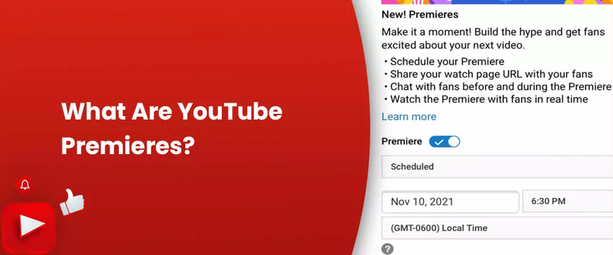
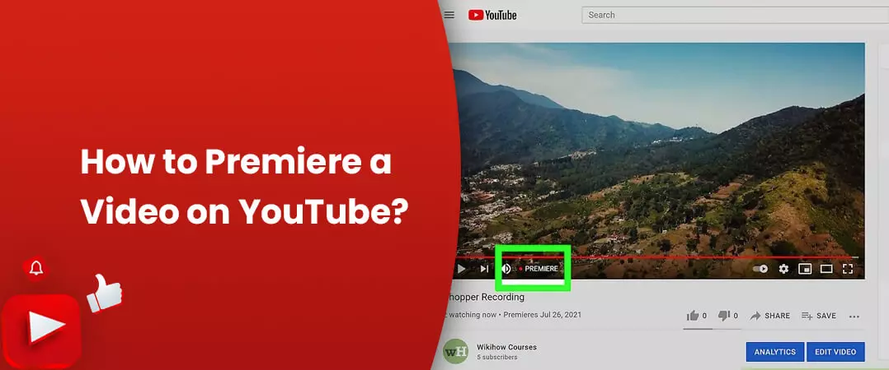
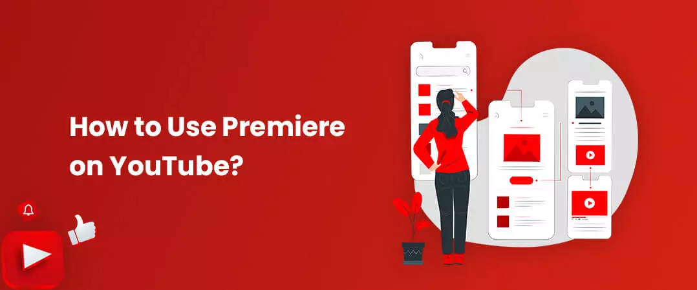
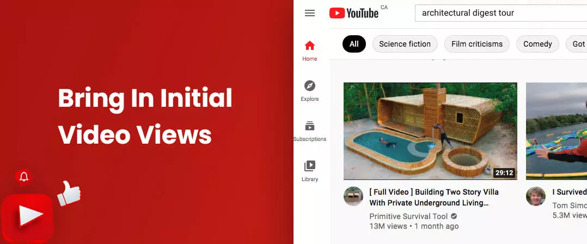
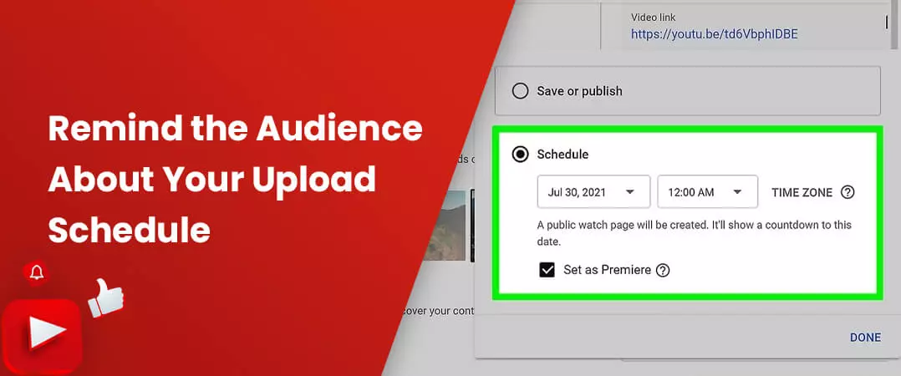
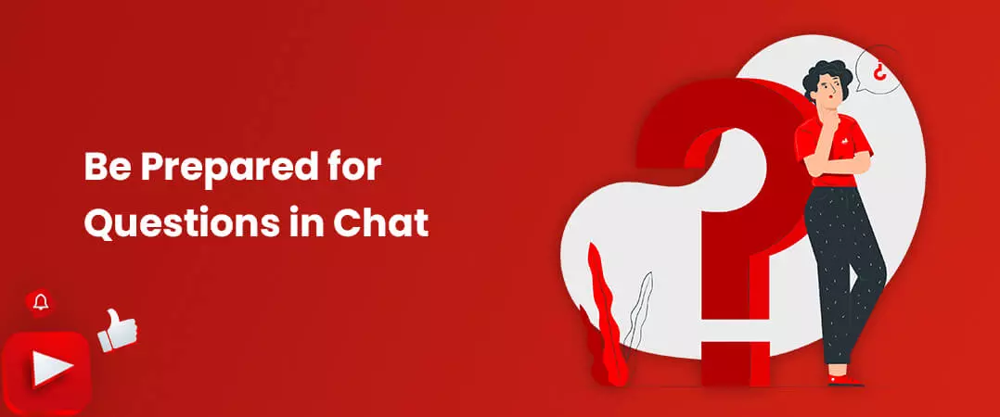
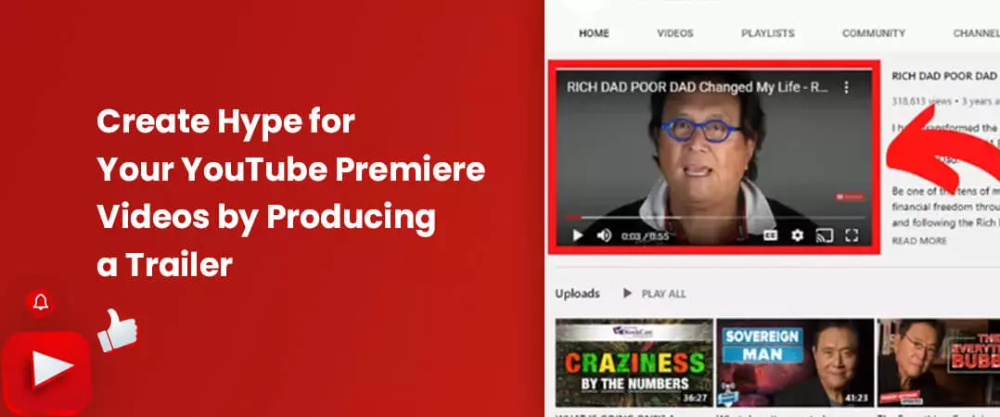
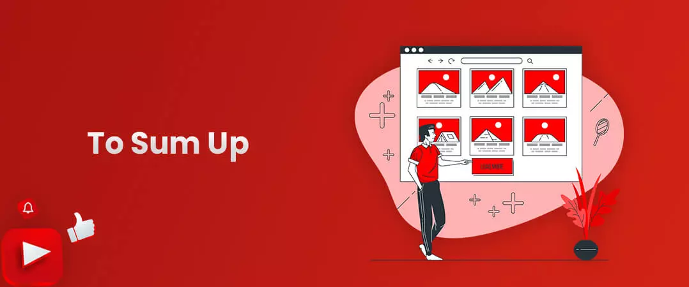

YouTube wanted to create new ways for users to experience content. Hence, the video-sharing platform decided to kick it up a notch and introduce something called the YouTube premiere.
Premier is a feature by YouTube that lets the creator watch his video together with his audience while interacting with them in real-time.
Before starting the broadcast, a watch page is created - this is where YT will premiere the video. Since the page remains public till the premiere commences, YouTubers share the watch page URL for more awareness. Like a regular video, the premier will pop up in different places - search results, homepage, and recommendations section.
People interested can visit the watch page, drop a comment, start chatting with fellow viewers, set a reminder and send a super chat (if enabled). You can Buy YouTube comments, if you want more people to get involved in lively conversation.
YouTubers can upload trailers to get their audience excited - this will be played to users visiting the watch page.
During the premiere, there is a 2-minute countdown, before viewers can watch the video in real-time. A user can rewind the video but not skip forward.
After the premiere ends, the video becomes part of the uploaded content - the countdown portion is excluded. All chats are available for everyone to see. Although the creators can turn it off at any time.
Contents
- 1. What Are YouTube Premieres?
- 2. How to Premiere a Video on YouTube?
- 3. How to Use Premiere on YouTube?
- 4. Bring In Initial Video Views
- 5. Remind the Audience About Your Upload Schedule
- 6. Be Prepared for Questions in Chat
- 7. Create Hype for Your YouTube Premiere Videos by Producing a Trailer
- 8. Organize A Regular Live Stream After Your Premiere Ends
- 9. To Sum Up
What Are YouTube Premieres?

In simple words, YT premiere picks out parts from your typical YT video and a live stream.
Similar to a normal video, you can shoot the footage in well in advance, and just like a live stream, you can play the recording in real-time with live chat and donations.
Think of premiere as a YT organized television broadcast, where new episodes are uploaded at specific times with no spoilers.
How to Premiere a Video on YouTube?

First, you need to record and edit the footage – this part of the process is the most time-intensive.
Once you have the finished product at hand, setting the video for a schedule is very easy and can be done in a few easy steps.
Follow the below steps to schedule your YT premiere:
- Step 1: Sign/login to YouTube with your google id and password.
- Step 2: Click your profile icon on the top right corner of your screen.
- Step 3: Select YouTube Studio from the drop-down.
- Step 4: On the Studio dashboard, select 'Content' on the left-hand column of the screen.
- Step 5: Select the file that you want to upload. Provide metadata like title, description, tags, and insert features like end screen and cards.
- Step 6: Progress till you arrive at the visibility tab.
- Step 7: Tick the box near 'set as premiere', to schedule your video.
- Step 8: Define the time and date of your video premiere.
- Step 9: You also have the option to check the box near 'Instant premier' if you wish to premiere your video at the very moment.
- Step 10: Press ‘Publish’ to finish your upload cycle.
- Step 11: Once your upload is complete, you will arrive on your 'Channel Content' page.
- Step 12: You can get the URL of your premiere page by pressing 'Get shareable link' - which you can promote on different platforms.
How to Use Premiere on YouTube?

From a viewer's perspective, you have to be present when the video goes live. You can set a reminder to get notified about the same.
The audience will have the opportunity to settle in, thanks to the YouTube premiere countdown of a 2-minutes that occurs before the video commences.
During the video premiere, you can engage in a lively conversation with other viewers and send donations via super chat - not different from a regular live stream. But unlike a live broadcast, the uploader can freely engage with their audience, without causing interference to the ongoing stream.
Like we mentioned before, you need to provide a title, description, and tags to your video.
Do not use different formats for live streams, if you want to retain your video as part of a playlist for replays - it would be favourable to stick to normal formatting.
Users who are not eligible for premier, but want to have a similar experience, can schedule their content at a specific time. On the downside, they have to depend on their audience to remember the schedule.
How Can YouTube Premieres Get You More Views and Subscribers
Bring In Initial Video Views

It is common knowledge that the YT algorithm prefers content that receives a high number of views and engagement - this video will be suggested more often in the watch next section, bringing in even more views and watch time.
Consider this feature as a great way to bring your more loyal following together as a family, have them enjoy the video together, and allow them to engage with you in real-time. Not to mention, provide an initial viewership boost to your video to appear more favourable to the algorithm.
Of course, it is also a good idea to buy YouTube subscribers to get more views on your premiere video.
Remind the Audience About Your Upload Schedule

Viewers that have been watching your content for a while are already familiar with your posting pattern. Hence, they will pay a timely visit to your channel for new videos.
On the other hand, when you schedule a video to premiere at your regular upload dates, you provide visual confirmation to your audience about when your new content is coming.
Viewers, on their part, can take the initiative of being reminded to join in when your video goes live. To get more people to participate, many YouTubers buy YouTube likes to boost credibility of their premiere video.
Also read: How to Schedule YouTube Videos in 2021
Be Prepared for Questions in Chat

When you have a large YouTube following, you won't find a minute's rest on the live chat. Your audience will have a lot of questions to vent and addressing each of them can be a little more than you bargained for.
How can you make it a tad bit easier for you? – well, you can start by penning down some frequently asked questions that you know you will receive.
For example, if you're premiering a new product launch, then the common questions on the minds of your audience would be related to the price, the specs, and the release date.
It would help if you direct your audience to your website where the answers to frequently asked questions are already available. Copy the URL and pin it on top of your live chat for everyone to see.
Also read: How to Use YouTube Super Chat Feature in Your Next Live Stream
Create Hype for Your YouTube Premiere Videos by Producing a Trailer

A watch page is automatically generated after you create a premiere - this is the section where your viewers can see the title and start interacting with one another in excitement.
To get your audience even more excited, you can add a trailer video on your premiere watch page. The 2-minute YT premium countdown gives ample time for users to savour the trailer.
Also read: How to Create an Awesome YT Channel Trailer
Organize A Regular Live Stream After Your Premiere Ends
It is a good idea to direct your audience to a live stream session once your premiere has ended.
Let's see how you can do that:
- Step 1: Navigate to your Studio dashboard.
- Step 2: Press the 'Content' option on the left column.
- Step 3: In the visibility section, select the schedule as a Premiere.
- Step 4: Press 'Set up Premiere'.
- Step 5: Below the 'Send view to live stream' option, decide on a video and choose Premiere or live stream.
A live stream is an ideal way to keep the conversation going in a video. You can answer more questions, collect more measured feedback and enhance your relationship with your loyal fans who stuck around even after it was over.
To Sum Up

The YouTube premiere feature comes in handy when you want to let your audience know about your new content – they can set reminders to never miss your updates.
You can be part of your audience and share in their watch experience. You can also interact with your fans during the live session.
Finally, we want to end this by saying that this feature is not only a platform for healthy audience creator interaction, but can also be a novel source of revenue that you cannot afford to be missing out on.
We hope you have found value in the time spent reading our article. Are you using the premiere feature on YT? Do let us know in the comments.
Feel free to share.